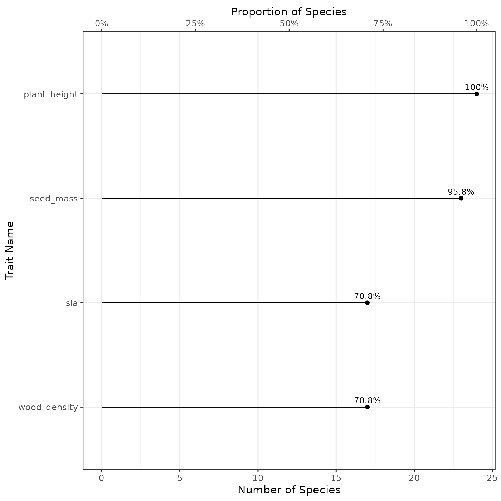
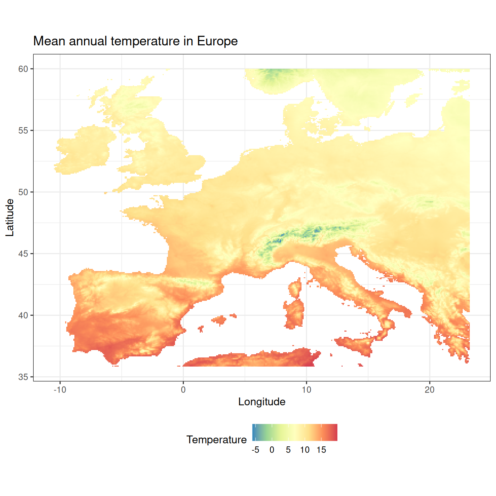
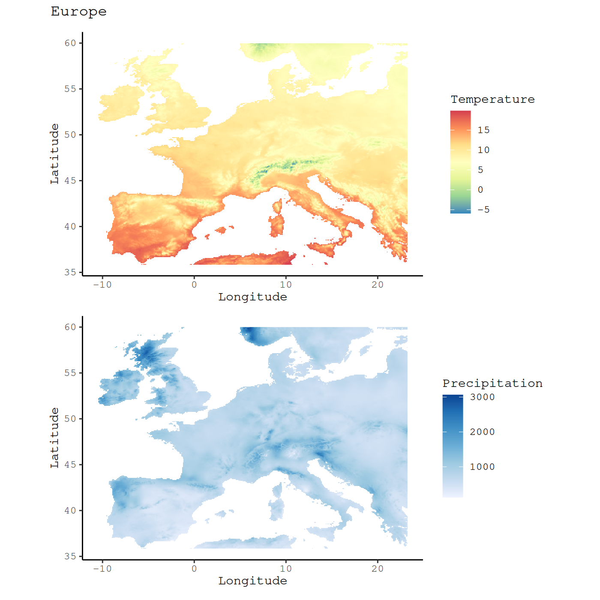

The aim of the funbiogeopackage is to help users streamline the workflows in functional biogeography (Violle et al. 2014). It helps filter sites, species, and traits based on their trait coverages. It also provide default diagnostic plots and standard tables summarizing input data. This vignette aims to be an introduction to the most commonly used functions.
The vignette will be a worked through a real world example using the internal dataset provided by funbiogeo.
Provided data
We are interested in mapping the functional traits of mammals of Europe. We used range maps data from the IUCN and trait data from the PanTHERIA database (Jones et al. 2009). The initial extraction is available on GitHub.
The package funbiogeo requires three different datasets to proceed with the analyses:
- the species x traits
data.frame(species_traitsinfunbiogeo) - the site x species
data.frame(site_speciesinfunbiogeo) - the site x locations object (
site_locationsinfunbiogeo)
You can load the example data using data(..., package = "funbiogeo") call:
data("site_species", package = "funbiogeo")
data("site_locations", package = "funbiogeo")
data("species_traits", package = "funbiogeo")Species x Traits
This object contains traits values for studied species. It should be a data.frame. The first column should contain species names and the other columns contain trait values.
Note that we’ll be talking about species throughout this vignette and in the arguments of funbiogeo, but the package doesn’t make any assumption on the biological level. It can be individuals, populations, strains, species, genera, families, etc. The important fact is that you should have trait data for the level at which you want to work.
Let’s examine the species_traits data included in the package:
| species | adult_body_mass | gestation_length | litter_size | max_longevity | sexual_maturity_age | diet_breadth |
|---|---|---|---|---|---|---|
| sp_001 | 461900.76 | 235.00 | 1.25 | 324 | 668.20 | 1 |
| sp_002 | 21.11 | 19.89 | 5.64 | 48 | 76.04 | NA |
| sp_003 | NA | NA | NA | NA | NA | NA |
| sp_004 | NA | NA | NA | NA | NA | NA |
The first column "species" contains species names, while the next 6 columns contain the trait values for all species. Note that the species names are anonymized because the IUCN data cannot be redistributed.
Let’s look at a summary of the trait dataset:
summary(species_traits)
#> species adult_body_mass gestation_length litter_size
#> Length:149 Min. : 2.3 Min. : 19.50 Min. :0.980
#> Class :character 1st Qu.: 11.2 1st Qu.: 26.61 1st Qu.:1.500
#> Mode :character Median : 35.9 Median : 41.99 Median :3.055
#> Mean : 18809.7 Mean : 69.93 Mean :3.369
#> 3rd Qu.: 2573.2 3rd Qu.: 76.70 3rd Qu.:4.970
#> Max. :675876.7 Max. :265.99 Max. :8.990
#> NA's :26 NA's :61 NA's :35
#> max_longevity sexual_maturity_age diet_breadth
#> Min. : 12.0 Min. : 25.37 Min. :1.000
#> 1st Qu.: 58.8 1st Qu.: 106.67 1st Qu.:1.000
#> Median :180.0 Median : 348.44 Median :1.000
#> Mean :171.3 Mean : 392.01 Mean :2.458
#> 3rd Qu.:252.0 3rd Qu.: 549.05 3rd Qu.:4.000
#> Max. :600.0 Max. :1542.25 Max. :8.000
#> NA's :68 NA's :65 NA's :66From there we can see that there are 149 included species and some missing trait values. For example, there we don’t have body mass for 26 species.
Note that to use your own species by traits data.frame, it should follow similar structure with the first column being named "species" and the other ones containing traits.
Site x Species
This object contains species occurrences/abundance/coverage at sites
of the study area. It is a data.frame. The first column, "site", contains site names while the other columns contains the abundance of each species across sites.
Note that here we are talking about sites in an abstract way. These can be plots, assemblages, of whatever set of species you’re interested in.
The package funbiogeo comes with the example dataset site_species. Let’s look at it:
| site | sp_001 | sp_002 | sp_003 |
|---|---|---|---|
| 1 | 1 | 0 | 0 |
| 2 | 1 | 0 | 0 |
| 3 | 1 | 0 | 0 |
| 4 | 1 | 0 | 0 |
| 5 | 1 | 0 | 0 |
| 6 | 1 | 0 | 0 |
| 7 | 1 | 0 | 0 |
| 8 | 1 | 0 | 0 |
| 9 | 1 | 0 | 0 |
| 10 | 1 | 0 | 0 |
The example dataset contains the occurrence of the 149 above-mentioned species across 1,505 sites (grid cells of 0.5° x 0.5° resolution).
Note that to use your own site by species data.frame, it should follow similar structure with the first column being named "sites" and the other ones containing presence information of species across sites.
Site x Locations
This object contains the geographical location of the sites. It should be an sf object from the sf package. The sites can have arbitrary shapes: points, regular polygons, irregular polygons, or even line transects! To make sure that your data is well plotted you should specify the Coordinate Reference System (CRS) of this object.
The package funbiogeo comes with the example dataset site_locations defining the location of the 1,505 sites (grid cells of 0.5° x 0.5° resolution). It contains the names of the site in its first column "site":
site_locations
#> Simple feature collection with 1505 features and 1 field
#> Geometry type: POLYGON
#> Dimension: XY
#> Bounding box: xmin: -9.978179 ymin: 35.84736 xmax: 23.02182 ymax: 59.84736
#> Geodetic CRS: WGS 84
#> First 10 features:
#> site geom
#> 1 1 POLYGON ((5.521821 59.84736...
#> 2 2 POLYGON ((6.521821 59.84736...
#> 3 3 POLYGON ((7.021821 59.84736...
#> 4 4 POLYGON ((7.521821 59.84736...
#> 5 5 POLYGON ((8.021821 59.84736...
#> 6 6 POLYGON ((8.521821 59.84736...
#> 7 7 POLYGON ((9.021821 59.84736...
#> 8 8 POLYGON ((9.521821 59.84736...
#> 9 9 POLYGON ((10.02182 59.84736...
#> 10 10 POLYGON ((10.52182 59.84736...Note that to use your own site locations object, it should follow similar structure with the first column being named "sites".
Visualizing the data (diagnostic plots)
funbiogeo provides many functions to display the data to help the user select specific traits, species, and/or sites. We are going to detail some of them in this section. We call them diagnostic plots because they help us to have an overview of our dataset prior to the analyses.
Trait completeness per species
A first way to visualize our data.frame is to look at the proportion of species with non-missing traits using the fb_plot_number_species_by_trait() function. It takes the species by trait data.frame as input.
fb_plot_number_species_by_trait(species_traits)
This plot shows us the number of species (along the x-axis) in function of the trait name (along the y-axis). The number of concerned species is shown at the bottom of the plot while the corresponding proportion of species (compared to all the species included in the trait dataset) is indicated as a secondary x-axis at the top. The proportion of species concerned is shown at the right of each point. For example, in our example dataset, 82.6% species have a non-NA adult body mass.
The function also include a way to provide a target proportion of species as the second argument. It will display the proportion as a dark red dashed line.
For example, if we want to visualize which traits cover more than 75% of the species:
fb_plot_number_species_by_trait(species_traits, 0.75)
The top number shows the corresponding number of species.
Number of Traits per Species
Another way to filter the data would be to select certain species that have at least a certain number of traits. This can be visualized using the fb_plot_number_traits_by_species() function. Similarly to the above-mentioned function, it takes the species x traits data.frame as the first argument:
fb_plot_number_traits_by_species(species_traits)
The plot shows the number (bottom axis) and the proportion (top axis) of species covered by a specific number of traits (0 to 6 in our example).
Filtering the data
Now that we displayed the diagnostic plots, we can decide thresholds and filter our data for our following analyses.
Filter trait by species coverage
We want to select the traits that cover at least 75% of the species. To do that we can use the fb_filter_traits_by_species_coverage() function. The function takes the species by traits data.frame and outputs the same dataset but with the traits filtered (so with less columns). The second argument threshold_species_proportion is the threshold proportion of species covered:
# Initial dimension of the input data
dim(species_traits)
#> [1] 149 7
# Filter traits
red_sp_traits <- fb_filter_traits_by_species_coverage(
species_traits, threshold_species_proportion = 0.75
)
dim(red_sp_traits)
#> [1] 149 3
# The reduced data set now has fewer trait columns
head(red_sp_traits)
#> species adult_body_mass litter_size
#> 1 sp_001 461900.76 1.25
#> 2 sp_002 21.11 5.64
#> 3 sp_003 NA NA
#> 4 sp_004 NA NA
#> 5 sp_005 31.60 4.94
#> 6 sp_006 21.90 5.16Filter species by trait coverage
Similarly you could filter species by their trait coverage. For example we would like to make sure that the species we filtered previously so that they show at least one of the two traits selected above. We can use the function fb_filter_species_by_trait_coverage() with the species x traits data.frame as the first argument and the second argument the proportion of traits covered by species.
# Filter species with at least 50% of included (two traits)
# at least one trait
red_sp_traits_2 <- fb_filter_species_by_trait_coverage(
red_sp_traits, threshold_traits_proportion = 0.5
)
head(red_sp_traits_2)
#> species adult_body_mass litter_size
#> 1 sp_001 461900.76 1.25
#> 2 sp_002 21.11 5.64
#> 5 sp_005 31.60 4.94
#> 6 sp_006 21.90 5.16
#> 7 sp_007 18.26 5.72
#> 9 sp_009 903.98 2.50
dim(red_sp_traits_2)
#> [1] 127 3We thus have selected 2 traits that cover at least 75% of the species and 127 species which have known values for these two traits.
Filter sites by trait coverage
Now that we have filtered our traits and species of interest we need to filter the sites. Similarly to above the function is fb_filter_sites_by_trait_coverage() it takes as two first arguments the site x species data.frame and the species x traits data.frame. The third argument is threshold_traits_proportion that indicates the percent coverage of traits to filter each site. Note that this coverage is weighted by the occurrence, abundance, or cover depending on the content of the site x species data.frame.
# Initial site x species data
dim(site_species)
#> [1] 1505 150
# Filter sites with at least 90% species covered
filt_sites <- fb_filter_sites_by_trait_coverage(
site_species, red_sp_traits_2, threshold_traits_proportion = 0.9
)
# Filtered sites
dim(filt_sites)
#> [1] 1268 150
filt_sites[1:4, 1:4]
#> site sp_001 sp_002 sp_003
#> 1 1 1 0 0
#> 2 2 1 0 0
#> 3 3 1 0 0
#> 4 4 1 0 0Now we selected 1,268 sites out of 1,505.
Computing Functional Diversity metrics
Now that funbiogeo helped us filter our data we can use them to proceed with our analyses. We can for example compute functional diversity indices. This where you should use your preferred packages to compute functional diversity indices like mFD, betapart, or hypervolume.
For the sake of the example we included a single function in funbiogeo to compute Community-Weighted Mean (CWM, Garnier et al. 2004) named fb_cwm(). The CWM is the abundance-weighted average trait per site. We’ll be using it in the following section but feel free to use any other functional diversity package.
Community-Weighted Mean (CWM)
To compute the CWM you can use the fb_cwm() function, it takes the site x species data.frame and species x traits data.frame as arguments.
cwm <- fb_cwm(filt_sites, red_sp_traits_2)
#> Some species had NA trait values, removing them from CWM computation
head(cwm)
#> site trait cwm
#> 1 1 adult_body_mass 31974.15
#> 2 2 adult_body_mass 39911.51
#> 3 3 adult_body_mass 39912.54
#> 4 4 adult_body_mass 39912.54
#> 5 5 adult_body_mass 41389.44
#> 6 6 adult_body_mass 39912.37It outputs a data.frame with 3 columns: site the first one shows the site name as provided in the input site x species data.frame, trait which indicates the trait name on which the CWM is computed, and cwm which shows the value of the CWM.
Putting Functional Diversity on the map
Map of environment
## Read raster ----
tavg <- system.file(
"extdata", "annual_mean_temp.tif", package = "funbiogeo"
)
tavg <- terra::rast(tavg)
## Map of raster ----
fb_map_raster(tavg)
fb_map_raster(tavg) +
scale_fill_distiller("Temperature", palette = "Spectral") +
theme(legend.position = "bottom") +
ggtitle("Mean annual temperature in Pennsylvania")
library("patchwork")
## Read raster ----
tavg <- system.file("extdata", "annual_mean_temp.tif", package = "funbiogeo")
tavg <- terra::rast(tavg)
prec <- system.file("extdata", "annual_tot_prec.tif", package = "funbiogeo")
prec <- terra::rast(prec)
## Individual Maps ----
x <- fb_map_raster(tavg, legend.position = "none") +
scale_fill_distiller("Temperature", palette = "Spectral")
y <- fb_map_raster(prec) +
scale_fill_distiller("Precipitation", direction = 1)
## Arrangement ----
figure <- x / y
figure +
plot_annotation(title = "Pennsylvania",
theme = theme(plot.title = element_text(face = "bold"))) &
theme_classic() &
theme(text = element_text(family = "mono"))